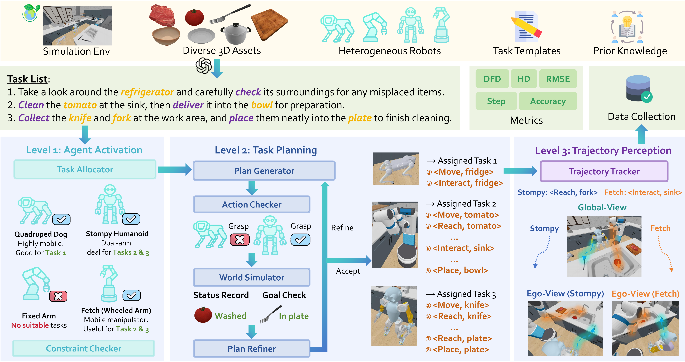
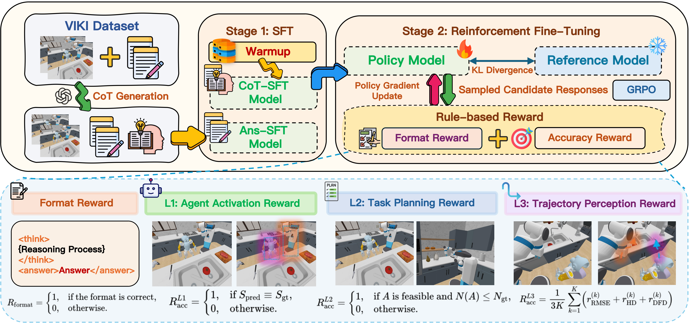
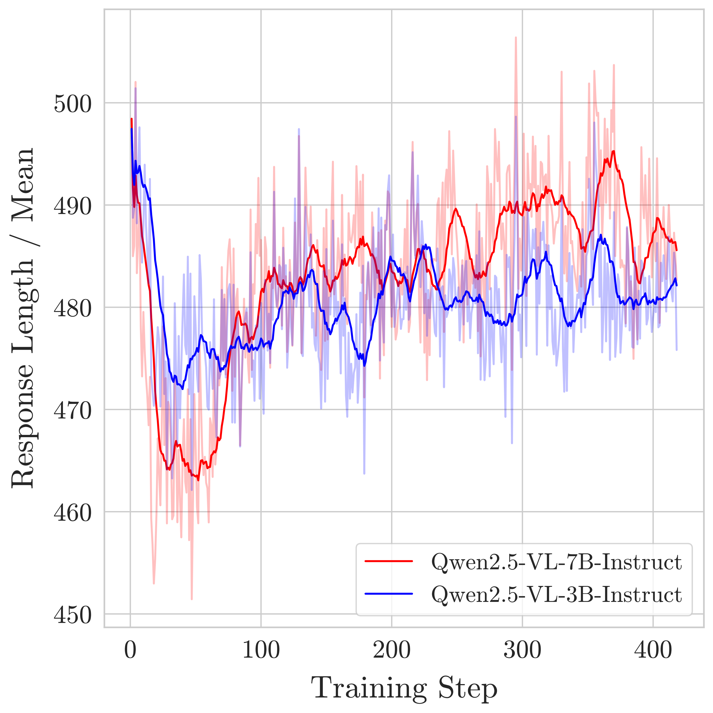

Introduction
In the sci-fi film I, Robot, the supercomputer VIKI coordinates thousands of humanoid robots with remarkable precision—
offering a glimpse into the potential of heterogeneous multi-agent systems. While fictional, this vision underscores a real and pressing challenge in artificial intelligence:
What will it take for embodied agents to work together like a team?
As shown in the figure below, tackling this problem is key to building scalable, cooperative AI systems capable of leveraging specialized embodiments—some tasks require unique robot capabilities: reaching high places, handling fragile objects, or navigating tight spaces—and achieving efficient cooperation—multi-agent collaboration can drastically improve performance through parallel execution and mutual support.
Embodied multi-agent cooperation involves two key aspects: cross-embodiment collaboration and efficient coordination.
(1) Cross-Embodiment Collaboration, where different embodiments are required for different tasks (e.g., washing requires a humanoid, while only wheeled robots can fetch from high cabinets).
(2) Efficient Coordination, where agents work in parallel (e.g., arms passing apple while a humanoid washes them) to improve overall efficiency.
VIKI-Bench
VIKI-Bench is a hierarchical benchmark designed to evaluate visual reasoning in embodied multi-agent collaboration. Inspired by real-world tasks requiring coordinated intelligence, it challenges agents to perceive, plan, and act jointly in diverse environments. The benchmark introduces a unified setting for studying high-level coordination and low-level motion prediction among heterogeneous robot teams.
Spanning over 20,000 task samples across 100 richly annotated scenes, VIKI-Bench is built upon RoboCasa and the ManiSkill3 platform. It features six types of heterogeneous robots—including humanoids, quadrupeds, and wheeled manipulators—interacting with diverse object configurations and spatial layouts. Each task is grounded in a natural language instruction and accompanied by global or egocentric visual observations, enabling fine-grained analysis of perception-driven collaboration.

VIKI-Bench is a hierarchical benchmark for evaluation on multi-agent embodied cooperation, featuring visual reasoning tasks in three levels.
(1) Agent Activation, where robots are selected based on the scene image and the task context.
(2) Task Planning, where a structured multi-agent action plan is generated, verified, and refined.
(3) Trajectory Perception, where the fine-grained motion trajectory of each agent is tracked from egocentric views.
The benchmark involves diverse robot types and complex 3D environments, with multiple metrics for quantitative evaluation.
VIKI-R
VIKI-R is a two-stage fine-tuning framework designed to equip vision–language models (VLMs) with robust visual reasoning capabilities for multi-agent collaboration. The first stage is a warmup phase based on supervised fine-tuning (SFT), where the model learns from high-quality Chain-of-Thought (CoT) annotations, enabling it to capture domain-specific reasoning patterns by optimizing both intermediate steps and final decisions. In the second stage, reinforcement fine-tuning further refines the model using the Grouped Relative Proximal Optimization (GRPO) algorithm. Here, the model explores multiple answer candidates and is guided by a reward function that evaluates both correctness and format, with policy updates performed under a KL-regularized objective for stable learning. Together, these two phases enable VIKI-R to achieve advanced perception-driven planning and compositional reasoning in complex, visual multi-agent tasks.

Framework of VIKI-R. We adopted supervised fine-tuning (SFT) and reinforcement fine-tuning on the VIKI dataset, incorporating format and accuracy rewards to optimize the policy model. We design different accuracy rewards tailored to each level of the benchmark.
Results
Our experiments reveal three key findings. First, closed-source models outperform open-source ones in zero-shot settings, with GPT-4o excelling at trajectory perception and Gemini-2.5-Flash-preview achieving the best agent activation accuracy. Second, model scale is crucial for open-source VLMs: Qwen2.5-VL (72B) matches or exceeds some closed models, while downsizing to 32B significantly harms planning and trajectory performance. Third, our two-stage fine-tuning framework VIKI-R surpasses supervised baselines like Ans-SFT and VIKI-R-zero, especially in out-of-domain generalization, highlighting the value of reinforcement learning for multi-agent visual reasoning.
Additional Analysis
Observation 1
We conduct an ablation study on reasoning tasks from the VIKI-L2 level to evaluate the impact of incorporating a step penalty during training. This penalty is applied when the predicted plan deviates in length from the ground-truth plan—i.e., when the agent takes too many steps compared to the optimal plan, it receives no reward. The goal is to encourage precise and efficient planning behavior.
-
Improved Generalization: With the step penalty, VIKI-R achieves 46.8% accuracy on out-of-domain (OOD-H) tasks, compared to only 7.1% without it. This shows that penalizing suboptimal plans significantly improves the model's ability to generalize to unseen scenarios.
-
Better Planning Efficiency: The average difference in plan length (Δ Steps) drops from 1.97 to 0.05, indicating that the model generates action sequences that are nearly identical to the ground truth. Meanwhile, in-domain accuracy improves from 8.0% to 96.0%, demonstrating that the step penalty also enhances planning precision in familiar environments.
ACC_ID: Accuracy on in-domain tasks.
ACC_OOD: Accuracy on out-of-domain tasks.
Δ Steps: Difference between predicted and ground-truth plan length.
|
| Variant |
ACC_OOD ↑ |
ACC_ID ↑ |
Δ Steps ↓ |
| VIKI-R (with step penalty) |
46.8 |
96.0 |
+0.05 |
| VIKI-R (without step penalty) |
7.1 |
8.0 |
+1.97 |
Observation 2
The curve in the right illustrates a dip during early format optimization, followed by a rise as task reasoning emerges. In the early stages of training, output length decreases as the model prioritizes format compliance to secure the format reward. At this point, the model learns to produce syntactically correct responses with minimal reasoning content. Once format accuracy saturates, the policy gradually shifts focus toward maximizing task correctness. This leads to a steady increase in output length, as the model begins to include more detailed reasoning steps necessary to solve the tasks accurately.

Figure: Output length dynamics across training.
Citation
If you find this project useful, welcome to cite us.
@article{li2025vikir,
title={VIKI‑R: Coordinating Embodied Multi-Agent Cooperation via Reinforcement Learning},
author={},
journal={},
year={2025}
}